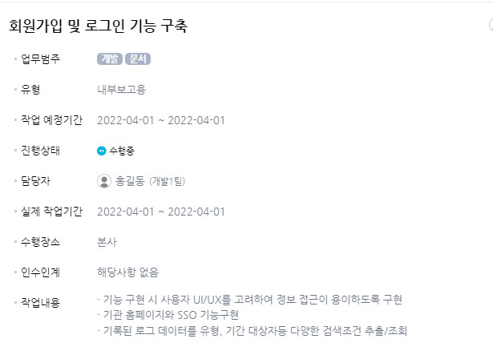

실적 등록업무
지난주 업무 수행내역
-
2023년 통합레이더정보 플랫폼 유지관리 용역사업2023-11-10 ~ 2023-10-2030%
2023년 통합레이더정보 플랫폼 유지관리 용역사업 완료보고회(완료예정,12/15)
- 메인, 백업 해양기상 무선팩스 방송 프로그램 정상 작동 확인
- 메인, 백업 전문 수신 프로그램 정상 작동 확인
- FTP 서비스 정상 작동 확인
- 팩스방송 전문 수신 여부 확인
- 방송시간별 방송 상태 확인 및 조치
- 메인, 백업 서버 시간 동기화 확인 -
프로젝트명2023-11-10 ~ 2023-10-2030%
업무명
- 업무상세 -
개인업무2023-11-10 ~ 2023-10-2030%
(프로젝트 약어, 없으면 생략)업무명
- 업무상세 -
개인업무2023-11-10 ~ 2023-10-2030%
(프로젝트 약어, 없으면 생략)업무명
- 업무상세
| 일 | 월(휴일) | 화(출장) | 수(외근) | 목(휴가) | 금 | 토 |
|---|---|---|---|---|---|---|
| - | 8 | 8 | 8 | 8 | 8 | - |
| 프로젝트 | 프로젝트명 | ||||||||||||||||
|---|---|---|---|---|---|---|---|---|---|---|---|---|---|---|---|---|---|
| 작업 내용 | 실적명(작업명,업무명,회의명) | ||||||||||||||||
|
 15일 회의 내용 - 최초 : 프로젝트 > 요구사항 > 업무 > 작업내용 전체 불러옴 - 계획에서는 항상 전체 불러옴 - 지난주에 작성한 계획 중 매핑될 경우 실적에 지난주에 작성한 계획내용과 진행률 불러옴 의견 - 지난주에 작성한 계획과 매핑된다면 실적에 계획과 전체를 불러오는 것이 어떤지? - why?전체 작업내용을 참고하고자 할때 탭을 이동하고 매핑되는 업무를 찾아야 하는게 불편함 ex) ---계획--- -작업1 -작업2 ---전체---- -작업1 -작업2 -작업3 |
|||||||||||||||||
| 소요 시간 |
|
||||||||||||||||
| 프로젝트 | 2023년 지진,화산재해 대응시스템 유지보수 | ||||||||||||||||
|---|---|---|---|---|---|---|---|---|---|---|---|---|---|---|---|---|---|
| 작업 내용 | 업무명(TASK) | ||||||||||||||||
| - 가속도 시스템 로그인창 계정 자동등록 오류 수정 - 권한에 따른 메뉴 표출 변경 |
|||||||||||||||||
| 소요 시간 |
|
||||||||||||||||
| 개인업무 | (프로젝트명, 생략가능) | ||||||||||||||||
|---|---|---|---|---|---|---|---|---|---|---|---|---|---|---|---|---|---|
| 작업 내용 | 업무명(개인이 등록한 업무명) | ||||||||||||||||
- 가속도 시스템 로그인창 계정 자동등록 오류 수정 - 권한에 따른 메뉴 표출 변경 |
|||||||||||||||||
| 소요 시간 |
|
||||||||||||||||
| 회의 | (프로젝트명, 생략가능) |
|
|||||||||||||||
|---|---|---|---|---|---|---|---|---|---|---|---|---|---|---|---|---|---|
| 작업 내용 | 회의명 | ||||||||||||||||
회의내용 |
|||||||||||||||||
| 소요 시간 |
|
||||||||||||||||
| 일 | 월(휴일) | 화(출장) | 수(외근) | 목(휴가) | 금 | 토 |
|---|---|---|---|---|---|---|
| - | 8 | 8 | 8 | 8 | 8 | - |
| 프로젝트 | 프로젝트명 | ||||||||||||||||
|---|---|---|---|---|---|---|---|---|---|---|---|---|---|---|---|---|---|
| 작업 내용 | 업무명(TASK) | ||||||||||||||||
| - 작업 상세내역 | |||||||||||||||||
| 소요 예상시간 |
|
||||||||||||||||